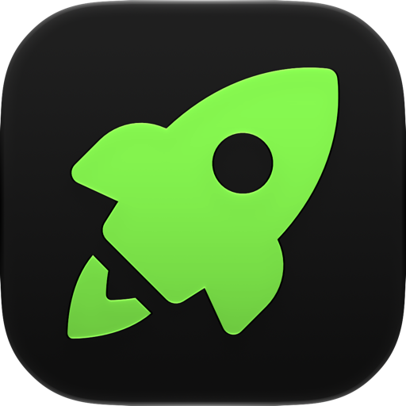

Lepszy czat Kick.com w Safari.
Możesz włączyć rozszerzenie Kickon w preferencjach rozszerzeń Safari.
Rozszerzenie Kickon jest włączone. Możesz je wyłączyć w preferencjach rozszerzeń Safari.
Rozszerzenie Kickon jest wyłączone. Możesz je włączyć w preferencjach rozszerzeń Safari.